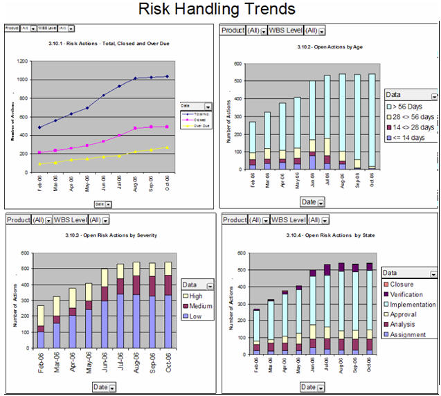

This indicator is used to evaluate effectiveness of handling risks. It indicates whether the program is proactively
handling/treating potential problems or risks at the appropriate times in order to minimize or eliminate their
occurrence and impacts to the program. If the actions are not closing per plan, then there is a higher probability that
risks will be realized. This insight can identify where additional action may be needed to avoid preventable problems
or reduce impacts. This indicator may also identify that the program does not have an iterative or continuous process
implementation for risk management. Thus, new risks may not be identified and handled, and may affect the program and
technical effectiveness/success. Refer to the measurement specification in Example: Measurement Specification: Risk Handling Trends (PSM SE) for details
regarding the indicator. It is recommended the Risk Handling Trends indicators be used in conjunction with the Risk
Exposure Trends indicators as discussed in Example: SE Leading Indicators - Risk Exposure Trends (PSM SE).

Risk Handling Trends.
As an example of appropriate analysis, consider these four related risk handling trends as a group. Indicator 3.10.1
Risk Actions, broadly shows that the project is not closing the actions items and also the number of over due actions
are increasing. Indicator 3.10.2 Open Actions by Age, shows risk actions beyond set acceptable thresholds. Indicator
3.10.3 Open Risk Actions by Severity, might temper any anxiety given the fact that the majority of the actions are of a
low and medium severity. Finally, Indicator 3.10.4 Open Risk Actions by State, gives an understanding that the risk
management process is being followed in that the majority of actions are being implemented.
Refer to Example: Measurement Specification: Risk Handling Trends (PSM SE) for a
detailed understanding of this leading indicator.
|